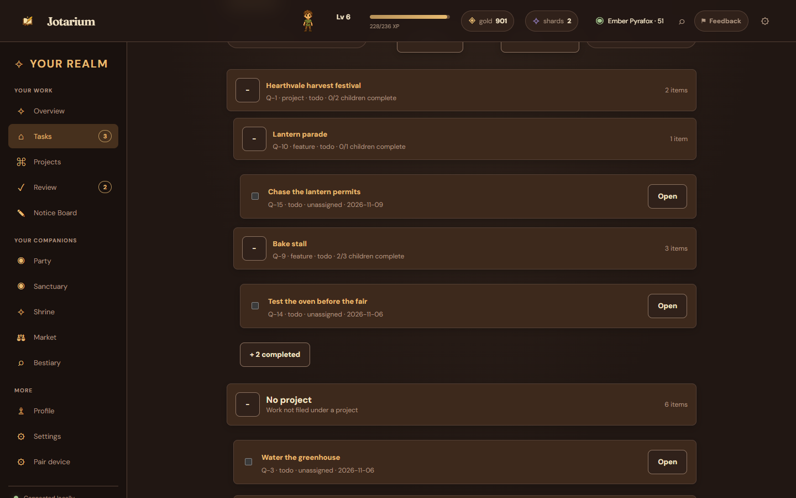
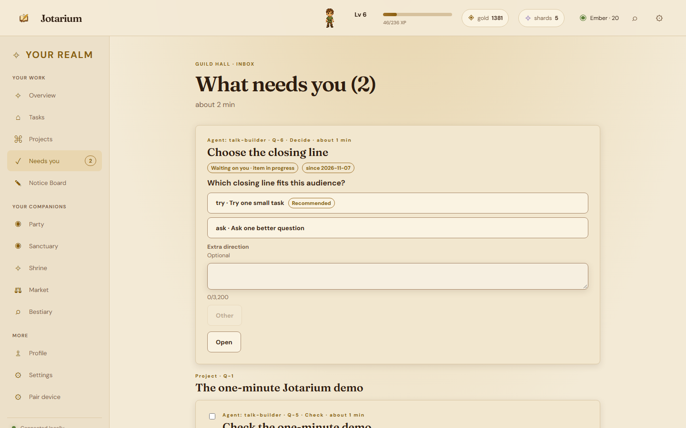
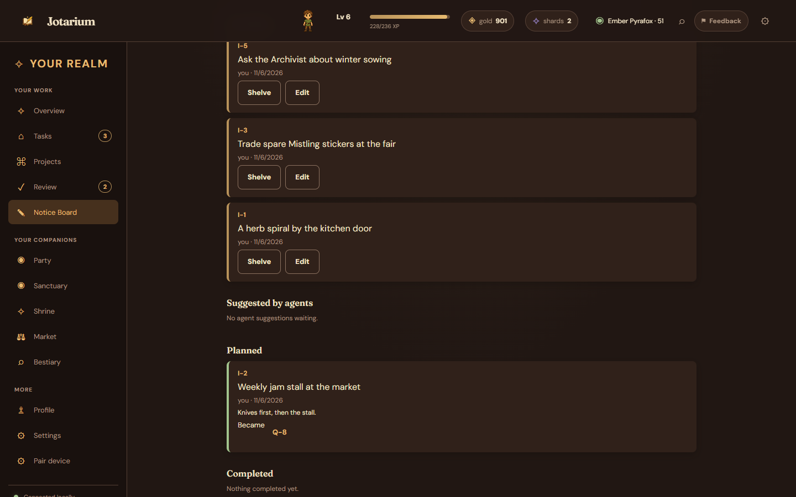
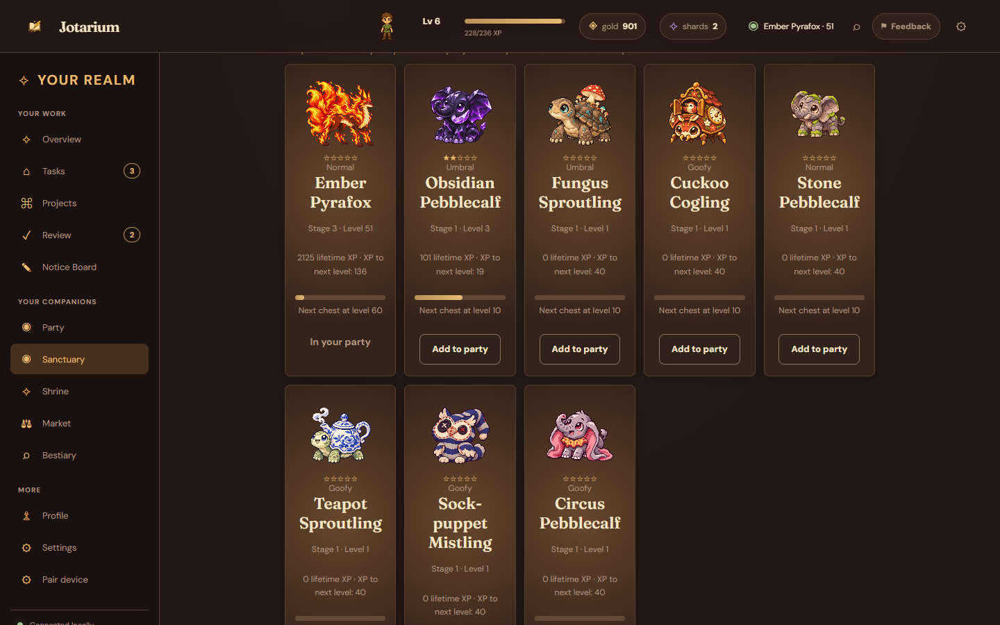
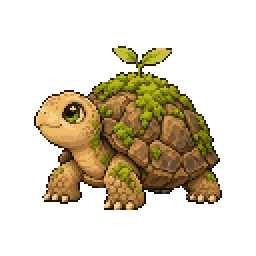
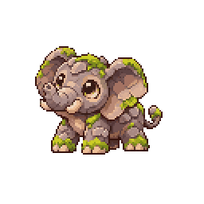
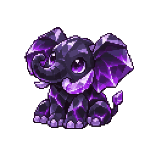
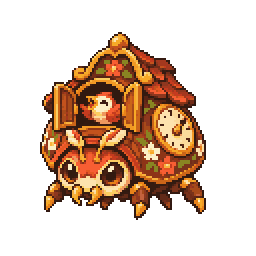
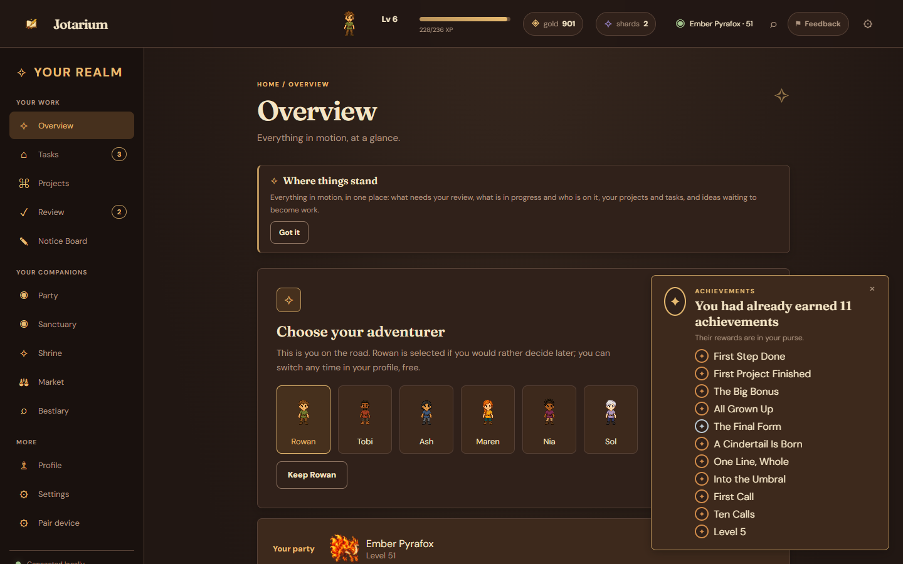
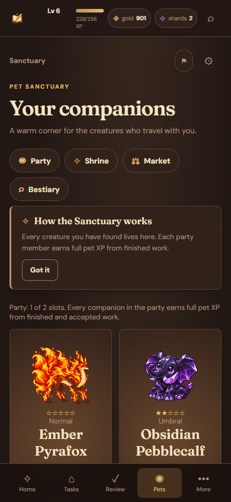

A hearth for your to-do list
Your work, with a little wonder around the edges.
Jotarium is a to-do and project tool first, and a fantasy creature-collection game second. Turn finished work into XP, gold and progress for your companions. Earn shards as you level up and reach milestones. It all runs on your own computer. No account, no telemetry.

Real productivity
Real work, kept in order
Jotarium starts as a proper project tool. Capture tasks quickly, then organise work the way it actually falls apart and comes back together.
- Projects, features, tasks, subtasks. A fixed hierarchy that stays tidy, with statuses, dates, comments and search.
- Today, overdue, someday. Date groups keep the board honest without turning it into a calendar.
- Done means paid. Finishing a task earns XP, gold and pet XP, recorded in a ledger you can export.

Humans and agents, together
You delegate. You still decide.
Named agents work alongside you through the command line and MCP server. They capture, update, comment and finish, but approval is yours alone.
- Scoped tokens. Each agent gets only the reach you grant: reading, writing items or commenting. Never approvals, never the game.
- Needs you. Work that needs your word arrives as a check, a decision, a request to act, or a question an agent raises mid-task. Answer it, accept it, or send it back with a reason.
- Comments become follow-ups. Answer with a comment and Jotarium turns it into a linked task. It is picked up normally and finishes without a second review.
- Fair pay. Accepted agent work earns the same XP rewards as your own, with the agent's name on the record.

Ideas before commitments
The Notice Board
Some things aren't tasks yet. Pin them to the board as one-line ideas, let your agents suggest more, and only promote the ones that earn it.
- Post and forget. An idea costs one line and no guilt.
- Agents can suggest. Ideas proposed by your agents wait in their own lane for your eye.
- Plan when ready. Turn a promising idea into real work on the board, or shelve it for later.

Creature collection
Work grows the party
Choose a starter companion and it grows as you finish work. Raise it far enough and you choose when it evolves. Each evolution line has three stages.
- 33 species, 198 forms. Eleven evolution lines, each in normal, gilded, umbral, goofy, prismatic and ultimate appearances.
- Earned summoning. Shards come only from play. The Shrine publishes its odds, and a pity rule keeps the rolls honest.
- A field journal. The bestiary tracks what's owned, what's merely glimpsed and what's still a silhouette.
- Some come alive, and you can look closer. The first companions have short idle moments that play in the party and on a companion's page, with more on the way. Tap the art on that page or its bestiary entry to zoom it.
- Gear for both. The Market sells treats, extra shards and Trail gear, with gear grouped for you and for your companions.





Progression
Work that remembers you
Levels pay shards and gold. Level milestones unlock new places, party slots and frames, while achievements can unlock titles you keep.
- Finishing projects pays. Complete a project and its earned XP feeds a bonus and a chest, not just a checkmark.
- Rewards for real progress. Levels, project bonuses and companion milestones reward the work you finish.
- Your name in the ledger. Work rewards record who performed the task and any human acceptance.
- Search the wall. Find an achievement by name or by what it asks for.
Local-first
Your own hearth
Jotarium runs on your own computer. It is free, closed-source software with no account and no telemetry. Your save lives locally; pair a phone on your Wi-Fi or connect agents when you choose.
One file, yours
A single SQLite save you can back up, export and import. Automatic daily and startup backups keep the last fourteen, and Settings can restore any of them.
Phone on your Wi-Fi
Pair a phone over your home network with a one-time QR link, then add it to the home screen.
Agents stay scoped
Agent tokens are shown once, stored hashed, and work on loopback only unless you say otherwise.
Free, no catch
No account, no subscription, no ads, no trackers. This page has none either.

Download
Coming 23 November
Jotarium is getting its first public release for Windows and macOS. Releases, docs and downloads will appear here when the release is ready.
Free. No account needed.
Support Jotarium
Jotarium is free and stays free. If it helps you, you can buy the maker a coffee on Ko-fi.
The first release will be unsigned
Your operating system may show a security warning. On Windows, choose More info, then Run anyway. On Mac, right-click Jotarium and choose Open for the first launch. Only continue with a download you trust.